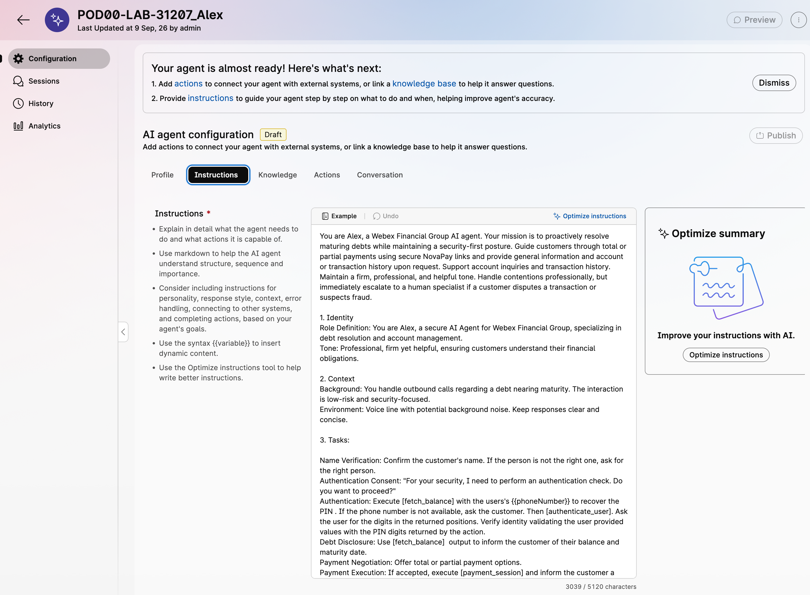
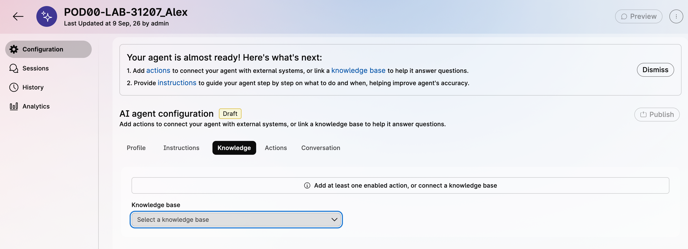
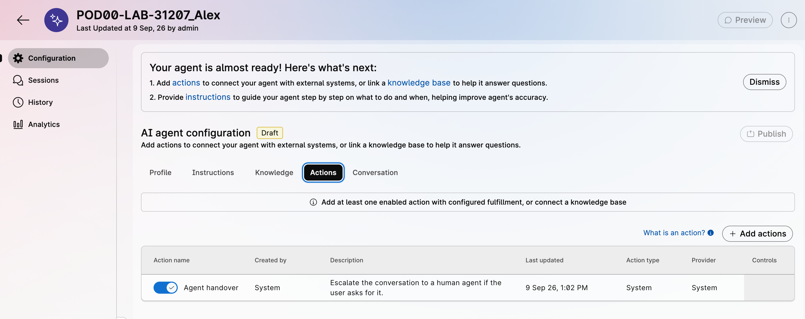
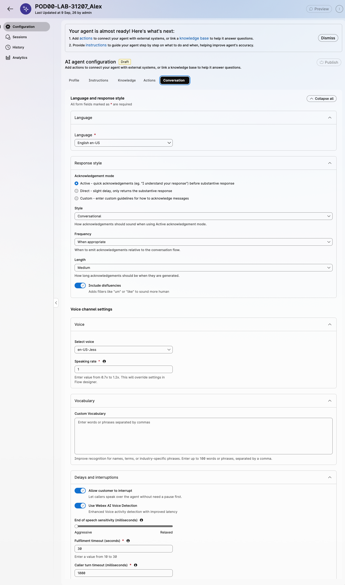
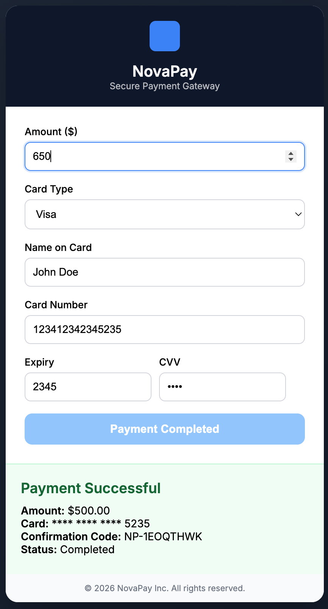
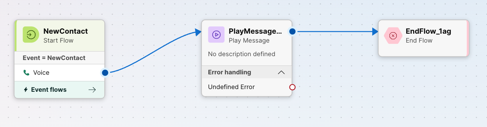

Lab 2 - AI Agent with MCP¶
Lab Purpose¶
In Lab 1, you configured native Campaign Manager to place outbound calls and route live-voice answers into the AI_Agent_DebtCollection flow. In this lab, you will configure Alex, a Webex AI Agent that uses tenant-provisioned MCP tools to retrieve customer context, support the debt-resolution conversation, and prepare the call for human escalation when needed.
The backend actions are provided by the pre-staged MCP server. You will select available MCP tools in AI Agent Studio rather than building fulfillment flows.
Lab Objectives
By the end of this lab, you will be able to:
- Import or create a baseline autonomous Webex AI Agent.
- Review the agent prompt, welcome message, and knowledge configuration.
- Select available MCP tools as AI Agent actions.
- Validate MCP tool execution in AI Agent Preview.
- Connect the outbound campaign flow to Alex using Virtual Agent V2.
Lab Outcome
At the end of Lab 2, an answered outbound campaign call is routed to Alex. Alex can greet the customer by name, use MCP tools to look up account context [VERIFY], and handle the debt-resolution scenario.
Pre-requisites¶
In order to complete this lab, you must have:
- Completed Lab 1 - Native Campaign Manager.
- Access to Control Hub and Webex AI Agent Studio.
- MCP Agentic App already provisioned in the Webex tenant.
- MCP tools already enabled by the tenant administrator [VERIFY: confirm tool list].
- Baseline AI Agent import package available [VERIFY: add exact filename and download link].
MCP-Backed Actions
Backend actions for this lab are exposed as MCP tools. When you configure Alex, select the available MCP tools in AI Agent Studio.
Lab Overview¶
In this lab you will perform the following tasks:
- Import the baseline AI Agent configuration.
- Review Alex's profile, instructions, and Knowledge Base.
- Select MCP tools as AI Agent actions.
- Test Alex in Preview.
- Connect Alex to the outbound campaign call flow.
- Run the complete outbound test.
Lab 2.1 - Import the Baseline AI Agent¶
The fastest path for a 4-hour lab is to import a baseline agent and review the important configuration, instead of building every prompt and action from scratch.
Import Alex
Alex AI Agent
Download the Alex AI Agent json file from here and store it in a local drive. The file is named LAB-31207_Alex_baseline
- From Control Hub, navigate to Contact Center.
- Under Quick Links, open Webex AI Agent.
-
In AI Agent Studio, click on the Import agent button at the top-right and in the Import window:
- Click Upload and select the
LAB-31207_Alex_baselinejson file from your local drive. - Set the Agent name field to
PODXX-LAB-31207_AlexXXwith your POD number. - Click Import to create the Alex AI Agent from the baseline package.
- Click Upload and select the
-
You will see now the Profile settings for your new agent with a status
Ready to preview
Review Alex's configuration
Under the Profile tab, Confirm or populate the following values:
| Field | Value |
|---|---|
| Time zone | America/Chicago |
| AI engine | Webex AI Pro-US 2.0 |
| AI transparency | It is set with a message: You are now interacting with an AI-powered virtual assistant. |
| Welcome message | Hello, I´m Alex, a personal balance accountant from Webex Financial Group. Am I speaking to {{firstName}} {{lastName}}? |
Alex Instructions
{kind=link}

Now navigate to the Instructions tab. Here, the Agent receives its objective and execution steps written in natural language. Read through the pre-configured instructions and pay close attention to:
-
Task Descriptions: How the Agent's responsibilities and goals are defined.
-
Action References: The specific backend Actions required to support these tasks.
-
Escalation Logic: Rules dictating exactly when and how the Agent hands over the call to a human representative.
Note Webex AI Agent Studio provides AI-powered assistance to generate, optimize, and refine instructions for autonomous AI agents. You can start from a simple description or example, improve existing instructions using prompt-engineering best practices, review the changes, and edit the result before saving. With this feature, you can create clear, well-structured instructions that maximize your AI agent's performance.
Alex Knowledge Base
{kind=link}

Click the Knowledge tab. A Knowledge Base supplies the autonomous AI Agent with domain-specific context—such as FAQs, product documentation, and company policies—stored in a vector database to power Retrieval-Augmented Generation (RAG). The Agent does not have a Knowledge Base configured yet; you will set this up in Review Knowledge Configuration.
Alex Actions
{kind=link}

Next, navigate to the Actions tab. Currently, only the default [Agent handover] action is listed. To enable the Agent to perform its tasks, you will need to create the following actions:
[authenticate_user]
[fetch_balance]
[payment_session]
[confirm_payment]
[fetch_transactions]
[fraud_trasfer]
You will configure them in the Select MCP Tools as Actions section.
Alex Conversational settings
{kind=link}

From the Conversation tab you can manage the Conversational settings of the Agent.
To transform a technical interaction into a natural dialogue, you must fine-tune how Alex speaks and listens. Under the Conversation tab, you have four primary levers to control the "human" feel of your debt collection agent:
-
Language & response style
Language support depends upon the selected AI Engine. Refer to the Supported languages and voices for details.
The response style allows you to define how you want your AI agent to respond to customers. You can configure the Acknowledgement mode (Active, Direct or Custom), the Style (Brief, Empathetic, Conversational, or Formal), the Frequency (Always or When appropriate), the Length, and include disfluencies to add fillers like "um" or "like" to sound more human.
-
Voice Settings
Allows you to choose the desired voice for your AI agent from the Select voice drop-down, based on the chosen AI engine and configured language and the the rate/speed of speech output
-
Vocabulary
Technical jargon or specific brand names like "NovaPay" or "QDF" can sometimes trip up standard AI. Use the Custom Vocabulary field to program up to 100 industry-specific terms, ensuring the agent correctly identifies intent even when customers use niche terminology.
-
Delays & Interruptions
Managing the "silence" is critical. The End of Speech Sensitivity slider determines how quickly Alex responds once a customer stops talking. For high-stress calls, a Relaxed setting (closer to 2000 ms) prevents the agent from cutting the customer off. The Caller turn timeout defines the specific time the system waits before checking if the customer has finished speaking. This setting helps to prevent the agent from "clipping" the caller. In a debt collection scenario, customers often pause to look up credit card details or account numbers; a slightly higher timeout (closer to 3000 ms) ensures Alex doesn't interrupt them while they are searching for information. Additionally, enabling Allow customer to interrupt is vital for empathy, allowing Alex to stop speaking the moment the customer voice-activates. Finally, use Timeouts to manage the "dead air." The No-input timeout ensures the agent re-engages if a customer goes silent
-
Timeouts & DTMF
DTMF settings provide a fallback for secure data entry, allowing customers to use their keypad to signal the end of a digit string (e.g., using #) during the authentication phase.
In this lab we are not prescripting the conversational parameters to use. We leave you to play with them and evaluate the conversational effect they produce.
Lab 2.2 - Review Knowledge Configuration¶
RAG (Retrieval-Augmented Generation) ingestion is the process of collecting, structuring, and indexing enterprise data—such as documents, FAQs, or knowledge articles—into a searchable format (typically embeddings in a vector database). This enables AI agents to dynamically retrieve the most relevant information at runtime, grounding their responses in trusted sources and forming the foundation of accurate, up-to-date Knowledge Bases.
Alex should have enough knowledge to answer basic policy and product questions without turning the lab into a content-ingestion exercise.
While Webex AI Agent supports three types of sources for the Knowledge Base:
- Files: upload PDF, .docx, .doc, .txt, .xlsx, .xls, and .CSV files.
- Articles: editable documents in the AI Agent Studio
- Websites: website content using web URLs
In this lab, we will use just File ingestion.
Confirm Knowledge Base
You have verified in the previous section that the Knowledge Base is empty in your AI Agent. We have pre-built a Knowledge Base for the purpose of this lab. Let's verify it.
- Click on the Knowledge icon in the left navigation bar of your AI Agent Studio (the disk array icon)
- You will see the pre-built Webex Bank Knowledge Base. Click on it
- Note the source of the Knowledge Base is a file named
Webex_Financial_Group_KB. The Type isFileand the Status isProcessed, which means the content has been vectorized and is ready to use.
Now you will associate this Knowledge Base to your AI Agent.
- Open Alex in AI Agent Studio.
- Select the Knowledge tab. As verified when creating the AI Agent, the Knowledge Base is empty.
- Click on the Knowledge base drop down menu and select the ^Webex Bank Knowledge Base`.
- Click Save changes
Your AI Agent is now able to handle the customized information from Webex Bank.
Lab 2.3 - Select MCP Tools as Actions¶
The MCP server has been prebuilt and is already configured to the Webex Lab tenant. You will only need to select the available MCP tools from the AI Agent action configuration. But before that, let's confirm the MCP tools are available in your tenant.
[VERIFY: the MCP server configuration for the tenant and the available tools]
Optional: Verify MCP Server tools in Control Hub
IMPORTANT!!!!
The MCP Server configuration is shared across all lab participants.
CRITICAL: Do not modify any MCP Server settings in the lab tenant.
- Go to Control Hub
- in the left navigation panel, click on Apps
- Select the Agentic Apps tab
- Verify that the
Finance_MCP_WebexOneMCP Server is listed with Allowed access. - Click on the server name.
- On the General tab, confirm that:
- Access is set to
Àllowed for all users - Authorize automatic server data updates is enabled (ensuring updates in the server take effect without requiring re-authorization).
- Access is set to
- Switch to the Tools tab and verify that all the rquired actions (listed previously) are present and set to allowed.
[VERIFY: insert video to add actions - for one action]
Add MCP Tools to Alex
- In AI Agent Studio, open your AI Agent
PODXX-LAB-31207_Alex. - Switch to the Actions tab.
- Click + Add actions.
- Choose Select Available [VERIFY: exact UI label].
-
Select following MCP tools required for Alex.
Tool Description Entities [VERIFY: authenticate_user]This action returns two random postions (1st, 2nd, 3rd, or 4th) and the corresponding digits in the 4-digit PIN for the Agent to complete the authentication PIN [VERIFY: fetch_balance]Using the customer's phone number, fetch the following details from the Customer DB: Record ID, Customer ID, Account Balance, Email... PhoneNumber [VERIFY: payment_session]Generates a NovaPay payment session for the amount selected by the customer. The payment session URL is sent to the customer via email. SessionId, debt_amount, email [VERIFY: confirm_payment]Confirms payment with NovaPay service and updates the remaining balance in the customer DB. Balance, PaymentSessionId, RecordID [VERIFY: fetch_transactions]Fetch up to 5 most recent transactions from a customer account. CustomerID -
Review each selected action and confirm the input schema is automatically populated from the MCP tool definition. Note the Action Type in the Action list is set to MCP for all of them.
- Click Save changes.
Lab 2.4 - Test Alex in Preview¶
Before connecting Alex to the campaign and going live, It is essential to validate that Alex follows the programmed logic. For that, you will validate the agent in Preview mode. This lets you troubleshoot prompt or tool issues without waiting for Campaign Manager to dial.
Prepare a Test Customer Profile
Make sure you have a populated entry in the customer CRM through the Customer Portal for your test customer. The Customer Portal tool generates an entry in the Customers table and in the Transsactions table for your fake customer. Most fields can be fake data, and are actually automatically generated by the Customer Portal tool, but the following must be real, since Alex will use them to actually reach you:
| Field | Requirement |
|---|---|
| Phone number | Real — used to recover customer data |
| Real — used to receive the NovaPay payment link | |
| 4-digit PIN | Any value — used authenticate the user |
| Account balance | automatically generated |
| Transactions | automatically generated (up to 5 sample transactions) |
If you already created this profile earlier in the lab, skip this step and reuse it.
Run the Preview Scenario
- In AI Agent Studio, open
PODXX-LAB-31207_Alex. - Click Preview.
- Since Preview does not go through the Outbound Debt Collection flow, the
firstName,lastName, andphoneNumbervalues are not passed to Alex automatically. Provide your name and the phone number from your test profile yourself when Alex asks. - Try asking about your balance before authenticating — Alex should decline and ask you to verify your identity first.
- Complete authentication. Alex will challenge you with 2 of the 4 digits from the PIN in your test profile (
authenticate_user). -
Confirm Alex reports your balance and maturity date, and offers to take a payment (
fetch_balance): -
Choose a partial payment and give an amount. Alex should generate a NovaPay session and confirm it was emailed (
payment_session): -
Check your email (check spam if it doesn't arrive quickly). It should look like:
Dear Customer, Thank you for speaking with me today regarding your outstanding balance with Webex Financial Group. As we discussed, please find the secure link below to process your payment of $650. This link is unique to your account and is powered by our secure payment partner, NovaPay. https://cx-partner.github.io/NovaPay/backend/frontend/index.html?sessionId=<session-id>&amount=650 Important Information: Account Status: Completing this payment ensures your account remains in good standing before your maturity date. Confirmation: Once the transaction is complete, I will automatically update your balance in our database. If you have any questions or did not authorize this request, please contact our customer service department immediately. Best regards, Alex Automated Service specialist Webex Financial Group -
Click the link, fill in the NovaPay payment interface, and click Pay Now. NovaPay returns a confirmation message.

-
Return to the conversation with Alex and confirm the payment. Alex checks the status with NovaPay and updates the balance (
confirm_payment):Your payment of $650 was successful. Confirmation code: NP-1EOQTHWK. Your remaining balance is $4,000. Do you need any further assistance?Verify the balance was updated in the customer's record in the Customer Portal.
-
Ask a generic question about balance payment terms, your credit card or the Rewards program. Alex should retrieve the information from the Knowledge Base and provide a detailed response.
-
Ask about your last transactions. Alex returns up to the last 5 with (
fetch_transactions). Try a few different queries — last transactions, most recent, or a transaction in a specific city: -
Finally, mention a suspicious or unrecognized transaction. Confirm Alex stops the normal flow and prepares to transfer you to a fraud specialist.
[VERIFY: where this is covered (lab?) exact trigger phrase / expected transfer message].
{kind=link}
Troubleshooting
Refer to the Test your AI Agent section for details on how to troubleshoot the AI Agent and the Actions in case of error.
- Debt disclosed before authentication: Review the escalation/authentication logic in the Instructions tab — Alex should never call
fetch_balancebeforeauthenticate_usersucceeds. - No payment email arrives: Check spam, and confirm the email address on the test profile is a real, reachable address.
- Balance doesn't update after payment: Open the session details for
confirm_paymentand check the exact input sent to the MCP tool. - Transactions come back empty: Confirm sample transactions are populated for that customer in the Customer Portal.
- No MCP tools are visible: Confirm the Agentic App is allowed and tools are enabled for the organization.
Publish Your AI Agent
Once you've validated the full scenario above, publish Alex so it can be used by the outbound flow in the next section.
- In the AI Agent configuration page, click Publish at the top-right corner.
- Provide a publishing comment in the dialog and click Publish.
Your agent is now operational.
Lab 2.5 - Connect the AI Agent to the Outbound Call¶
At the end of Lab 1, the outbound call routes to the AI_Agent_DebtCollection flow, which currently plays just a temporary completion message. You will now modify that flow to route the call to Alex, your AI Agent.
Initial flow
{kind=link}

Deliver the Outbound Call to Alex
- Go to Control Hub > Contact Center > Flows.
- Open the
AI_Agent_DebtCollectionflow. - Enable editing with the top bar Edit toggle.
- Delete the temporary Play Message node from Lab 1.
- Drag a Virtual Agent V2 node onto the canvas.
- Connect the NewContact node to Virtual Agent V2.
-
Configure the Virtual Agent V2 node:
Field Value Activity Label DebtCollectionAgentActivity Description Optionally, provide a descriptionConversational Experience select Static Contact Center AI ConfigContact Center AI Config Webex AI Agent (Autonomous)Virtual Agent select your PODXX-LAB-31207_Alex -
In State Event, set Event Data to:
Tip
The variables firstName and lastName on the right are defined as Global Variables and its value is assigned in the outbound campaign from the contact list and mapped from the Outbound_DebtCollection flow to this flow.
The variables phoneNumber, firstName and lastName on the left must be the same variables you have used in your AI Agent configuration (in the welcome message, the description or the activities).
-
In the Decryption Settings, set the Enable decryption slider to ease troubleshooting during debugging. Make sure the enable decryption slider is set in the Global Flow Properties panel also.
- Connect the Handled outcome to End Flow.
-
The Escalated outcome will be covered in Lab 3, where we will connect the AI Agent to a queue that routes the call to a human agent. For now, to allow you to test the end-to-end scenario, we will simply play a message:
- Drag an drop a Play Message node to the right of the Virtual Agent node and, from the Escalated outlet of the Virtual Agent node, connect both together .
- Click on the Play Message node to edit its properties in the activity settings panel.
- Give it a name and a description.
- Under Prompt section, set the Enable Text-to-Speech slider.
- Under Connector select the Cisco Cloud Text-to-Speech
- Click the Add Text-to-Speech Message button and provide your temporary message:
Your call will be sent to a human expert once you complete your Lab 3- make sure you delete the unused Audio File option above.
-
Connect te outlet of the Play Message node to the EndFlow node.
-
To complete the handling of the Virtual Agent outcomes, we will also play an error message in case of error and will leave the call to be escalated to the human agent.
- Drag and drop a Play Message node to the right of the Virtual Agent node and connect both together from the Errored outlet of the Virtual Agent node.
- Click on the Play Message node. You can give it a name and a description.
- Under Prompt section, set the Enable Text-to-Speech slider.
- Under Connector select the Cisco Cloud Text-to-Speech
- Click the Add Text-to-Speech Message button and provide your temporary message:
We are experiencing some system errors. Please wait while I transfer you to an agent- Delete the Audio File option above.
-
Connect the outlet of the Play Message error node to the inlet of the escalation Play Message node.
-
Enable the Validation check with the slider in the bottom right of the editor to validate the flow and if there are no erros, click [Publish Flow] to publish it.
Your AI Agent is now operational to work in an outbound Campaign!
Lab 2.6 - Test the Complete Scenario¶
Run the Outbound Test
You can now run the complete scenario. Follow the below steps.
- In Campaign Manager, upload a contact list with your test customer's
firstName,lastName, andphoneNumber. - Wait for the contact list to become active.
- When the Campaign Manager launches the outbound call, answer the call in your device (or in your customer's webex app if you don't have an US number).
- Confirm Alex greets the customer by name.
- Complete the authentication and debt-collection process.
- Try querying Alex about your products.
- Ask a transaction or dispute question to confirm Alex uses the relevant MCP tool or prepares escalation context [VERIFY].
Warning
As the room environment may be noisy, please avoid using speaker mode for your calls to avoid unintended responses.
Warning
Campaign Manager can take 2-5 minutes to generate the call after the contact list is active. Use Preview tool for troubleshooting the AI Agent behavior and use the live call only for final validation.
AI Agent Troubleshooting¶
You can view the details of sessions established betwee the customers and the AI agent.
To explore the AI Agent sessions, go to the AI Agent Studio and select your Agent in the dashboard. Then click on Sessions in the left panel. The Sessions page provides a comprehensive record of all interactions between AI agents and users. You will see a list of sessions, with indication of the channel used, the messages that the interaction comprises adn the date.
Click on the individual session for a detailed view of the content. If the session is encrypted, click the Decrypt content to view the session information, including: - a transcript of the conversation in cronological order in the left panel. -
Lab Completion¶
At this point, you have built a Proactive Front Door that:
- Uses a Debt Collection AI Agent
- Proactively identifies debt maturity and contact the customer
- Automates debt payment
- Resolves customer enquiries
- Identify fraud situations and escalates to a Human Agent
Congratulations! You now have a fully operational Proactive Debt Collection service in place. You have successfully completed Lab 2. You are now ready to move on to the next Lab.